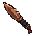
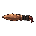
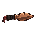
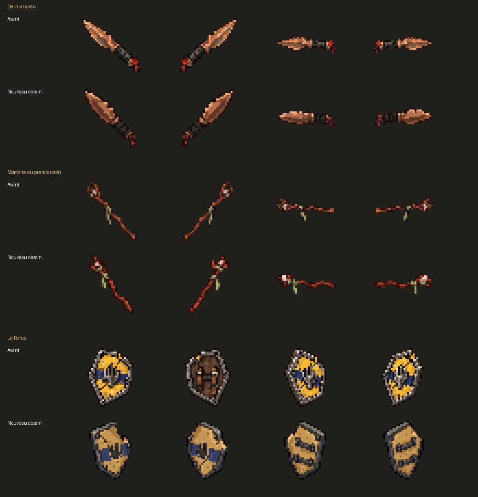
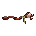
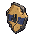
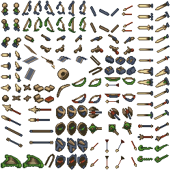

Dernier aveu




Dernier aveu, Mémoire du premier soin et Le Refus : silhouettes et aplats simplifiés, sans halo diffus visible. Ces alternatives conservent les anciens dessins.
12 aperçus à 36 × 36, agrandis sans lissage. Taille de comparaison choisie pour l’étude ; aucun équipement porté en jeu n’est montré.
Dossier Claude · Prompts OpenAI et provenance · Revue et mesures
Les rangées comparent la lisibilité, pas une animation. Pour le bouclier, l’ordre avant/arrière diffère entre les deux planches ; les revers restent des propositions artistiques.












Palette indexée, grille finale, poses natives et points de prise restent à valider.